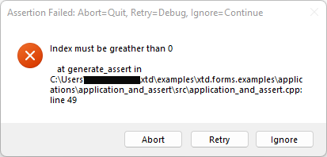
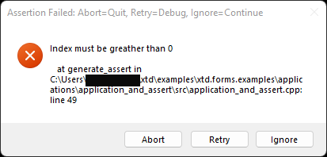
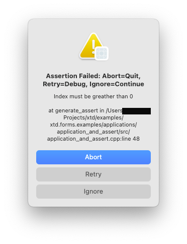
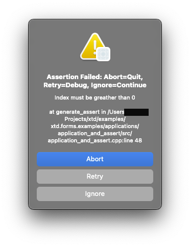
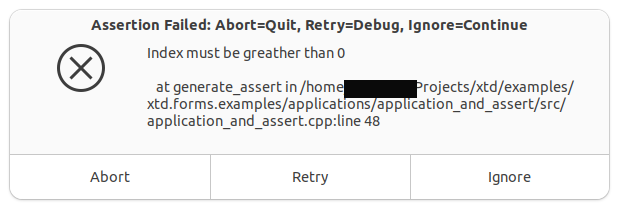
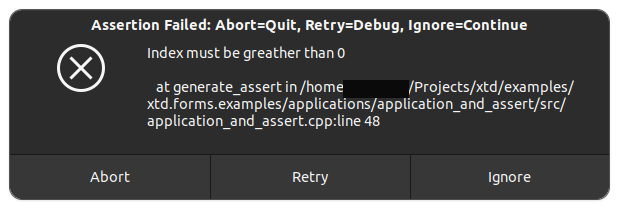

|
xtd
0.2.0
|
Loading...
Searching...
No Matches
application_and_assert.cpp
Shows how to create an application with xtd::forms::application class and how to manage assert.
- Windows
- 

- macOS
- 

- Gnome
- 

#include <xtd/diagnostics/assert>
#include <xtd/diagnostics/debug>
#include <xtd/diagnostics/debug_break>
#include <xtd/diagnostics/debugger>
#include <xtd/forms/application>
#include <xtd/forms/button>
#include <xtd/forms/form>
#include <xtd/startup>
using namespace xtd;
using namespace xtd::diagnostics;
using namespace xtd::forms;
public:
static auto main() {
application::run(main_form());
}
main_form() {
text("application and assert example");
// Uncomment following line to remove assert dialog
//debug::show_assert_dialog(false);
generate_assert_button.auto_size(true);
generate_assert_button.location({10, 10});
generate_assert_button.parent(*this);
generate_assert_button.text("Generate assert_");
generate_assert_button.click += event_handler(*this, &main_form::generate_assert);
generate_debug_dassert_button.auto_size(true);
generate_debug_dassert_button.location({10, 50});
generate_debug_dassert_button.parent(*this);
generate_debug_dassert_button.text("Generate debug::cassert_");
generate_debug_dassert_button.click += event_handler(*this, &main_form::generate_debug_cassert);
generate_debug_break_button.auto_size(true);
generate_debug_break_button.location({10, 90});
generate_debug_break_button.parent(*this);
generate_debug_break_button.text("Generate debug_break_");
generate_debug_break_button.click += event_handler(*this, &main_form::generate_debug_break);
generate_debugger_debug_break_button.auto_size(true);
generate_debugger_debug_break_button.location({10, 130});
generate_debugger_debug_break_button.parent(*this);
generate_debugger_debug_break_button.text("Generate debugger::debug break");
generate_debugger_debug_break_button.click += event_handler(*this, &main_form::generate_debugger_debug_break);
}
private:
void generate_assert() {
auto index = 0;
}
void generate_debug_cassert() {
auto index = 0;
debug::cassert_(index > 0, "Out of range", "Index must be greather than 0");
}
void generate_debug_break() {
debug_break_();
}
void generate_debugger_debug_break() {
debugger::debug_break();
}
button generate_assert_button;
button generate_debug_dassert_button;
button generate_debug_break_button;
button generate_debugger_debug_break_button;
};
startup_(main_form::main);
Represents a window or dialog box that makes up an application's user interface.
Definition form.h:52
#define debug_break_()
Signals a breakpoint to an attached debugger.
Definition debug_break.h:19
#define assert_(...)
Checks for a condition; if the condition is false, displays a message box that shows the call stack.
Definition assert.h:22
generic_event_handler<> event_handler
Represents the method that will handle an event that has no event data.
Definition event_handler.h:32
#define startup_(main_method)
Defines the entry point to be called when the application loads. Generally this is set either to the ...
Definition startup.h:162
The xtd::diagnostics namespace provides classes that allow you to interact with system processes,...
Definition assert_dialog_result.h:10
The xtd::forms namespace contains classes for creating Windows-based applications that take full adva...
Definition about_box.h:13
The xtd namespace contains all fundamental classes to access Hardware, Os, System,...
Definition system_report.h:17
Generated on Mon Jan 15 2024 22:51:01 for xtd by Gammasoft. All rights reserved.